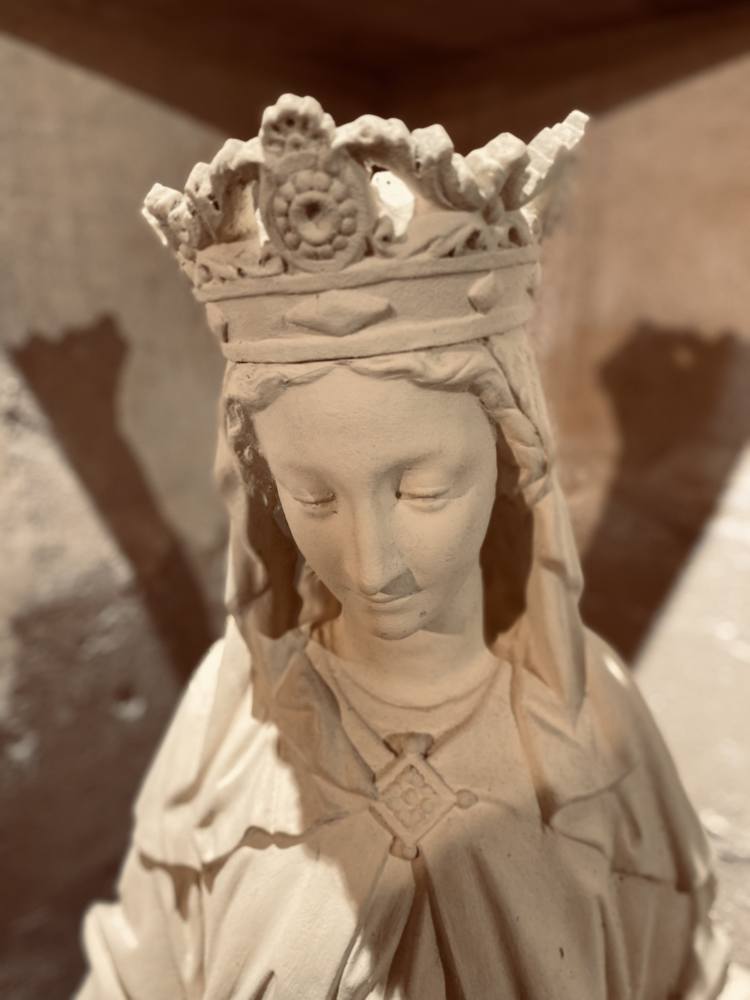
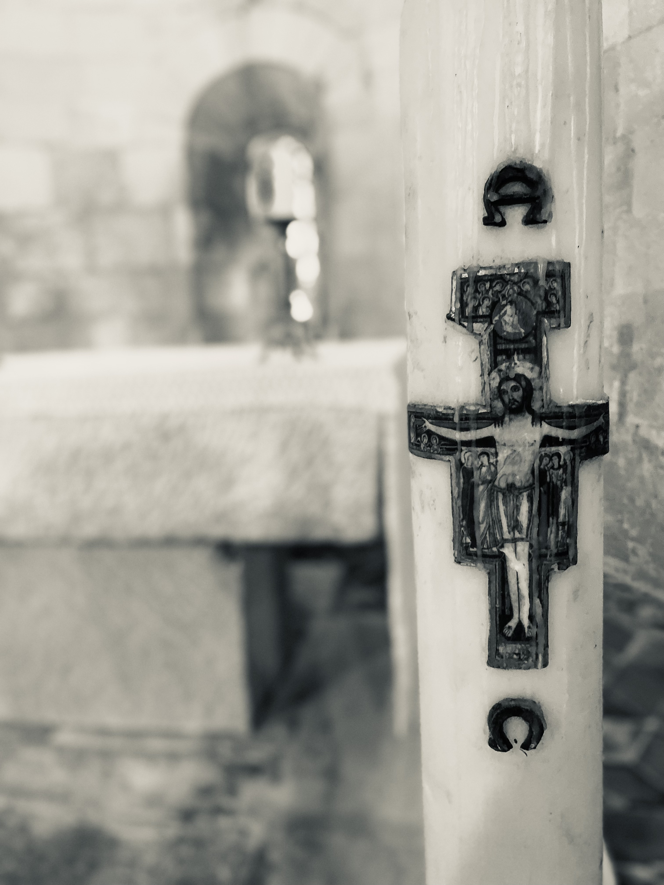

.png)




La chapelle du XIe siècle a été illuminée par les habitants de ce hameau amoureux de leur patrimoine.
Le hameau de Lansac, dans la plaine de Tarascon, à quelques centaines de mètres du Rhône, est connu pour ses deux domaines viticoles, son centre équestre mais aussi pour son patrimoine remarquable. Un patrimoine que ses habitants tiennent plus que tout à mettre en valeur. Ainsi pour les fêtes de Noël, la place des anciens combattants qui accueille la chapelle a été entièrement décorée de guirlandes éclairant de lumières multicolores l'édifice religieux du XIème siècle, objet de toutes les attentions.
"L'église fédère la population, les anciens et les nouveaux du hameau qui se retrouvent lors de rendez-vous religieux importants comme Noël. Une messe sera célébrée ce 24 décembre, à 19h. Malheureusement la jauge sera limitée à 30 personnes et nous ne pourrons pas accueillir tous les fidèles" déplore Florence Testud, la secrétaire de l'association des Amis de l'Église de Lansac. "Habituellement, cet événement rassemble les gens bien au-delà des 200 habitants du hameau et alentours.

C'est le père Claude Gay, de Saint-Étienne du Grès, qui célébrera la messe de Noël. Avec le père Michel Savalli, curé de l'Unité Pastorale Sainte-Marthe de Tarascon, ils viennent régulièrement dans ce lieu officier pour les baptêmes, les mariages, les enterrements. "À la mi-avril, nous célébrons les Rameaux. On fait venir à cette occasion un troupeau de chèvres. Fin mai début juin, une autre messe est donnée suivie du verre de l'amitié. On y déguste les vins du Domaine de Lansac et du Grand Mas de Lansac. C'est très agréable.
Il y a également la fête des vendanges après l'été, avec une procession, une charrette décorée de ceps de vigne et de grappes de raisins. Après la messe nous partageons entre voisins et paroissiens un bon petit repas. La première année nous étions 120, puis 170 l'année suivante... Nous faisons également venir des groupes folkloriques qui animent les balèti ou qui donnent des concerts. C'est vraiment très convivial cette vie au hameau" poursuit Florence Testud heureuse de pouvoir assister, malgré le Covid, à la messe de Noël à Notre Dame de L'Assomption.Comme toujours un vin chaud sera servi à l'issue de la cérémonie.